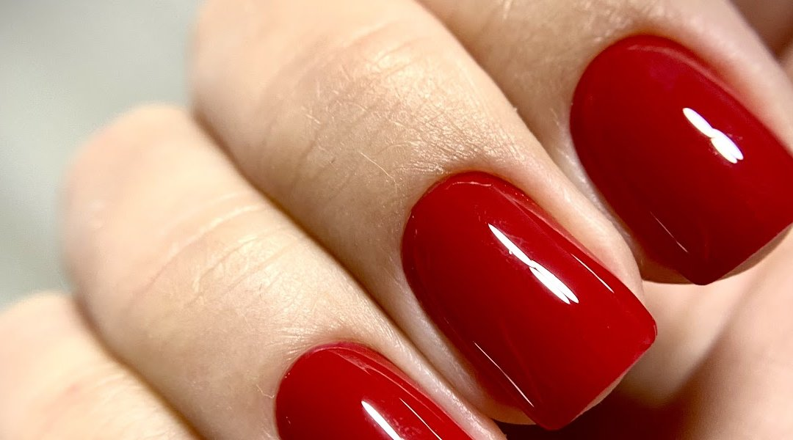
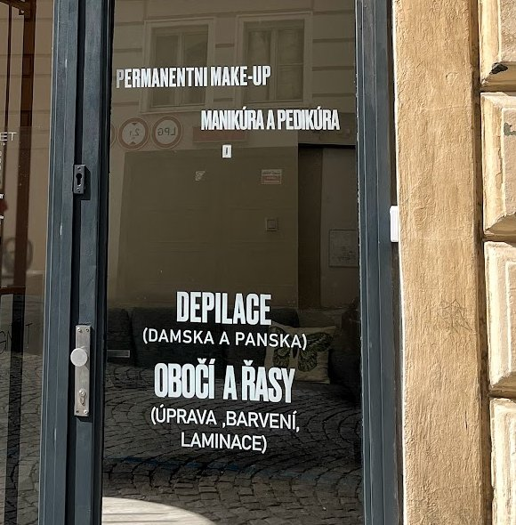
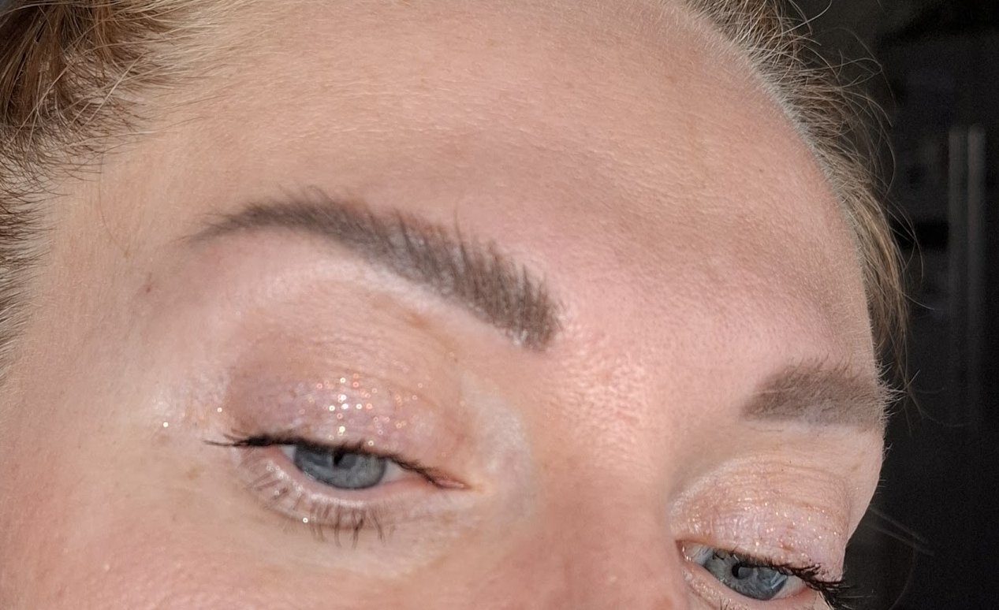
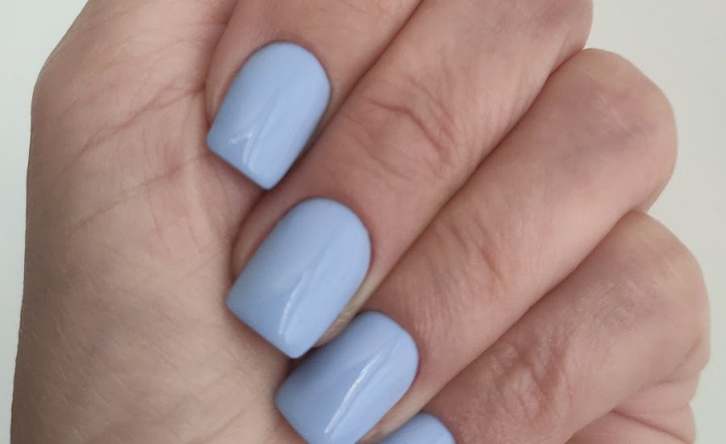
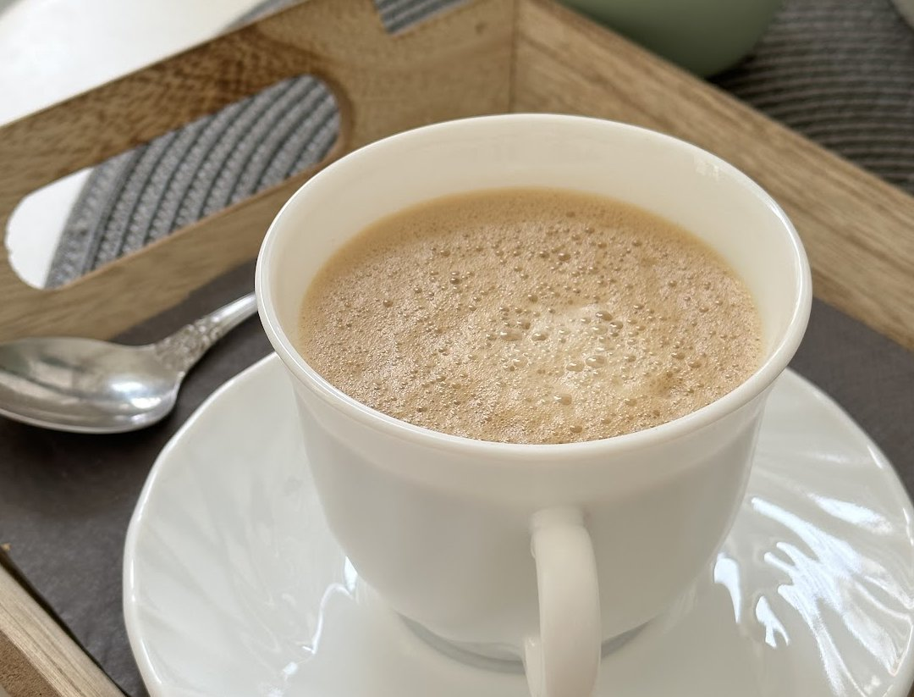
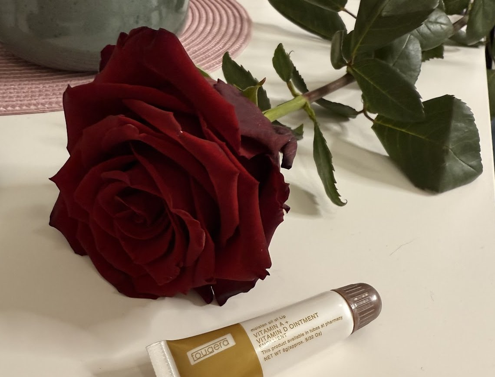
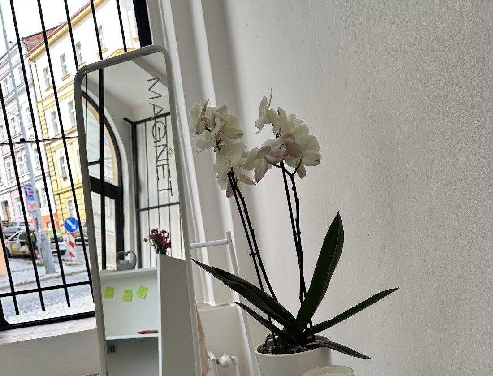
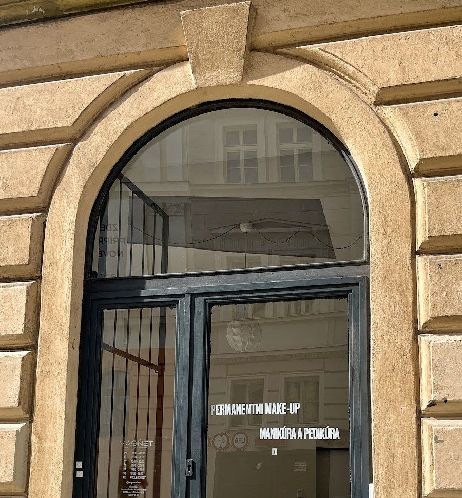

Štítného 23, Žižkov
Permanentní make-up obočí a rtů. Manikúra a pedikúra, depilace, obočí a řasy.
4,9 ze 103 recenzí na Googlu
Po–Pá 10:00–20:00, So 10:00–18:00
Zavolat 737 135 330Termín si domluvíte telefonem, platí se hotově. V neděli po domluvě.
Co děláme
Čtyři věci, které máme napsané na dveřích.


Permanentní make-up
Obočí a rty, i oprava staršího pigmentu.
„Má cit pro přirozenost, to je pro mne důležité. Za touto paní a jejími službami neváhám jet 160 km.“Michaela, Google

Manikúra a pedikúra
Gelový lak na rukou i na nohou.
„Nechala jsem si udělat manikúru a pedikúru a byla jsem velmi spokojená s kvalitou práce.“Viktoria, Google
Depilace
Dámská i pánská. Laserovou epilaci chodíte v kurzu, na několik návštěv po sobě.
„Absolvovala jsem celý kurz laserové epilace a jsem velmi spokojená. Chloupky skoro nerostou, a když i něco roste, tak strašně pomalu, holení jednou za měsíc.“Olga, Google
„Začala jsem s kurzem laserové depilace. Výsledek byl vidět asi za 10–14 dní a na to, že mám za sebou jen první sezení, mě příjemně překvapil.“Julia, Google
Obočí a řasy
Úprava a barvení obočí, laminace řas.
„Tento salon navštěvuji již přes půl roku. Cena-kvalita ♡“Marina, Google
Co k tomu patří
Tři věci, které klientky na Googlu zmiňují samy od sebe.

„Nabídnou vám kávu, přikryjí vás dekou, zvednou náladu.“Hanna, Google

„Pro domácí ošetření dali zdarma kosmetiku, krém na oční linky. A ještě na konci vám darují mini dárek, krásnou voňavou růži!“Valeria, Google

„Líbilo se mi všechno, salon, poloha, mistryně.“Anastasia, Google
Štítného 23
Přízemí, vchod přímo z ulice. Hledejte tmavé dveře v kamenném oblouku.

Po–Pá 10:00–20:00, So 10:00–18:00
- Pondělí10:00–20:00
- Úterý10:00–20:00
- Středa10:00–20:00
- Čtvrtek10:00–20:00
- Pátek10:00–20:00
- Sobota10:00–18:00
- Nedělepodle dohody
Štítného 629/23
130 00 Praha 3 – Žižkov
Objednáváme se telefonem, platí se hotově.
„Parkování u salonu v ulici není problém, pracují taky o víkendu, kdy je parkování zdarma.“Valeria, GoogleZavolat 737 135 330
Štítného 629/23, Praha 3